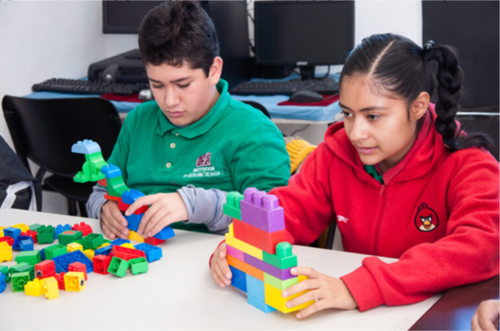

Es cierto que los padres de niños con autismo enfrentan múltiples desafíos emocionales y prácticos. El diagnóstico de autismo en un niño puede ser un momento difícil para los padres, ya que implica un cambio significativo en la dinámica familiar. Los padres a menudo deben someterse a un largo proceso educativo para comprender las necesidades de su hijo y buscar asesoramiento profesional para ayudarles a lidiar con el estrés que puede conllevar el cuidado de un niño con autismo. Es fundamental que los padres reconozcan la importancia de cuidar de sí mismos para poder cuidar mejor a su hijo con autismo. Los padres pueden buscar ayuda profesional para manejar su estrés y mantener un equilibrio emocional, lo que les permitirá estar mejor preparados para abordar las necesidades de su hijo y mantener la armonía en el hogar.
Padre de familia
